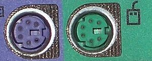
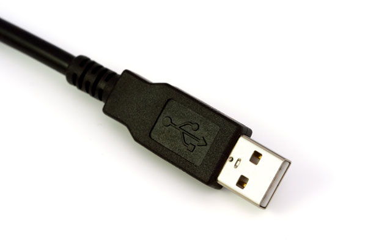

History
First Keyboards
In 1986, IBM released their first PC equipped with a keyboard, the Model M. With it came the PS/2 port specifically made for keyboard and mouse inputs on PCs. These devices often requried specific drivers for the PS/2 port to function; without them the port registers no input. Some modern day users prefer PS/2 for its ability to prevent USB attacks and relative safety.
USB - Universal Serial Bus
USB changed the use of ports for computer peripherals immensley. Though current computers (such as Apple's Macbook Pro) have migrated to the slimmer USB-C, basic USB 2.0/3.0 is found on most devices. Early USB 1.0 and 1.1 devices were capable of speeds up to 12 megabits per second, though they still required drivers, similar to the PS/2 ports USB hoped to replace.
USB HID Compliance
With the onset of USB 2.0, USB ports began to enable "plug and play" These devices subscribe to USB Human Interface Device (HID) Compliance, which defines the how computers connect to USB devices. HID compliance required an environent where drivers are no longer and necessary and Rubber Ducky is able to perform. Without the need for drivers and USB port's willingness to run any tech the user puts into it, Rubber Ducky can easily send mimic keyboard input. USB 3.0 still has the same problems of placing complete trust into devices placed in the USB port.